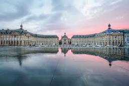
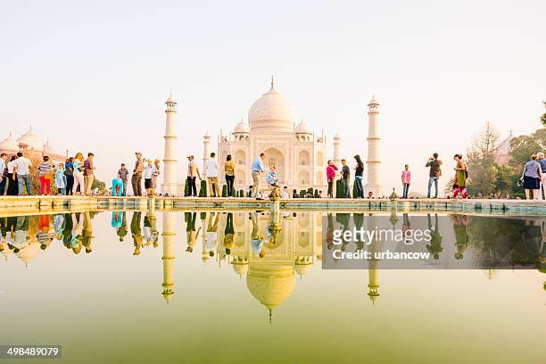
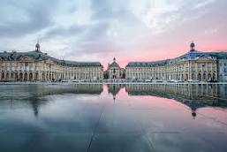
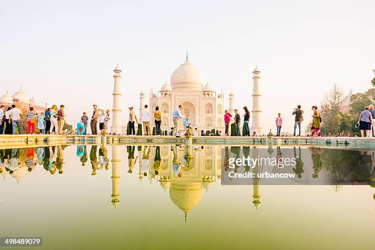
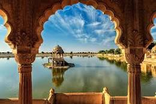
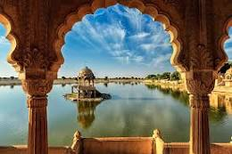

Tourism, the act and process of spending time away from home in pursuit of recreation, relaxation, and pleasure, while making use of the commercial provision of services. As such, tourism is a product of modern social arrangements, beginning in western Europe in the 17th century, although it has antecedents in Classical antiquity.urism is distinguished from exploration in that tourists follow a “beaten path,” benefit from established systems of provision, and, as befits pleasure-seekers, are generally insulated from difficulty, danger, and embarrassment. Tourism, however, overlaps with other activities, interests, and processes, including, for example, pilgrimage. This gives rise to shared categories, such as “business tourism,” “sports tourism,” and “medical tourism” (international travel undertaken for the purpose of receiving medical care).
| Name | Tour Name | Tour_Id | Price | Days | |
|---|---|---|---|---|---|
| Jenish | Goa | 01 | 25000 | 18 | jk@gmail.com |
| Rohan | Kerela | 02 | 30000 | 12 | rp@gmail.com |
| Meet | meet@gmail.com | ||||
| Jatin | Kulu-Manali | 03 | 40000 | 22 | jatin@gmail.com | All tours are very best tours |
By the early 21st century, international tourism had become one of the world’s most important economic activities, and its impact was becoming increasingly apparent from the Arctic to Antarctica. The history of tourism is therefore of great interest and importance. That history begins long before the coinage of the word tourist at the end of the 18th century. In the Western tradition, organized travel with supporting infrastructure, sightseeing, and an emphasis on essential destinations and experiences can be found in ancient Greece and Rome, which can lay claim to the origins of both “heritage tourism” (aimed at the celebration and appreciation of historic sites of recognized cultural importance) and beach resorts. The Seven Wonders of the World became tourist sites for Greeks and Romans.
 

Transport Innovation was an essential enabler of tourism’s spread and democratization and its ultimate globalization. Beginning in the mid-19th century, the steamship and the railway brought greater comfort and speed and cheaper travel, in part because fewer overnight and intermediate stops were needed. Above all else, these innovations allowed for reliable time-tabling, essential for those who were tied to the discipline of the calendar if not the clock. The gaps in accessibility to these transport systems were steadily closing in the later 19th century, while the empire of steam was becoming global. Railways promoted domestic as well as international tourism, including short visits to the coast, city, and countryside which might last less than a day but fell clearly into the “tourism” category. Rail travel also made grand tour destinations more widely accessible, reinforcing existing tourism flows while contributing to tensions and clashes between classes and cultures among the tourists. By the late 19th century, steam navigation and railways were opening tourist destinations from Lapland to New Zealand, and the latter opened the first dedicated national tourist office in 1901.